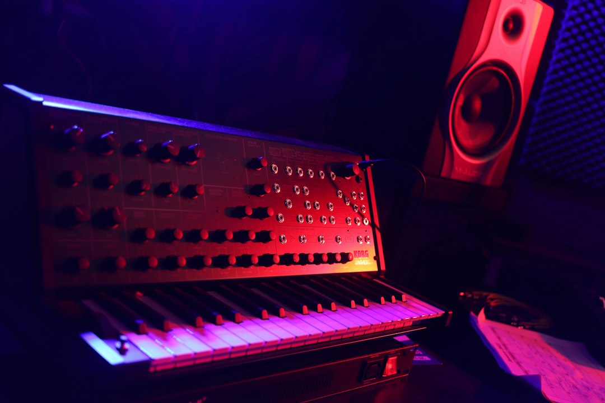

Come FF Edizioni Rivoluziona la Creazione di Identità Acustica per Aziende, Agenzie e Emittenti Radio

FF Edizioni: la Soluzione Definitiva per Aziende, Agenzie e Emittenti Radio che Cercano un'Identità Acustica Unica
- Le basi musicali royalty-free limitano la riconoscibilità del brand e l'efficacia degli spot.
- La mancanza di identità acustica genera comunicazioni poco memorabili e meno coinvolgenti.
- FF Edizioni offre composizioni orchestrali originali e certificate SIAE, ideali per distinguersi nel mercato.
Analisi approfondita della notizia e delle implicazioni operative
Nel panorama attuale di marketing e comunicazione, sempre più aziende, agenzie di comunicazione e emittenti radio si affidano a basi musicali royalty-free per la produzione dei propri spot pubblicitari. Questa scelta, spesso dettata da ragioni di budget e rapidità, porta però a un’omologazione sonora significativa. Le basi anonime e generiche utilizzate comunemente non riescono a distinguere i messaggi pubblicitari, creando una concentrazione di suoni spesso simili tra loro e priva di carattere.
Questa situazione è ulteriormente aggravata dalla crescente esigenza di creare esperienze di brand immersive e memorabili, dove l’identità sonora gioca un ruolo chiave nell’aumentare la riconoscibilità e la fidelizzazione del pubblico. In particolare, per settori dinamici come le emittenti radio e le agenzie di comunicazione, la differenziazione acustica rappresenta un vantaggio competitivo fondamentale.
La sfida operativa consiste quindi nella creazione di contenuti audio originali e di alta qualità che, oltre a offrire un impatto emozionale, rispettino gli standard di tutela dei diritti d’autore, elemento imprescindibile per serietà e compliance nel settore.
Le conseguenze e i costi di non agire
Continuare a utilizzare basi musicali anonime e spot poco memorabili ha impatti negativi sia sul piano strategico sia su quello economico. Innanzitutto, la mancanza di un’identità acustica distintiva riduce drasticamente la capacità di catturare e mantenere l’attenzione del pubblico target. Il risultato è una comunicazione meno efficace, con conseguente perdita di opportunità di conversione o fidelizzazione.
Dal punto di vista operativo, l’assenza di composizioni originali comporta inoltre rischi legati al copyright e alla possibilità di trovarsi coinvolti in controversie legali, soprattutto in ambiti regolamentati come le emittenti radiofoniche.
Inoltre, affidarsi a soluzioni anonime implica una forte limitazione creativa: gli spot perdono personalizzazione e calore emotivo, elementi che contraddistinguono un brand premium e innovativo. Ciò si traduce in una perdita di credibilità percepita e margini di profitto ridotti nel medio-lungo termine.
Come FF Edizioni risolve il problema
FF Edizioni emerge come risposta tecnologica e artistica alle criticità descritte, proponendo composizioni orchestrali inedite e certificate SIAE curati personalmente dal Maestro Fausto Fusetti, rinomato per collaborazioni storiche con artisti come Califano e Bongusto.
Questa soluzione permette di creare canzoni o jingle commerciali su misura che incarnano pienamente l’identità del brand. Grazie alla certificazione d’autore, le aziende possono valorizzare la proprietà intellettuale e garantire la legalità nell’uso delle musiche.
La personalizzazione è il cuore dell’offerta: ogni brano è concepito per emozionare, raccontare una storia e creare una memorabilità unica, differenziandosi dalla massa di soluzioni standardizzate e anonime. FF Edizioni garantisce un livello qualitativo e di prestigio che pochi competitor possono vantare nel settore B2B.
| Caratteristiche | Gestione Tradizionale | Con FF Edizioni |
|---|---|---|
| Originalità Musicale | Basi comuni e royalty-free, spesso dulcis. | Composizioni uniche, orchestrali, create su misura. |
| Certificazione Diritti | Sovente assente o poco chiara. | Certificata SIAE, tutela legale completa. |
| Impatto Emotivo | Limitato, generico e poco distintivo. | Elevato grazie a arrangiamenti professionali e cura d’autore. |
| Riconoscibilità Brand | Bassa, confusione sonora con competitor. | Alta, firma sonora esclusiva e memorabile. |
| Costo | Variabile ma spesso scarso valore percepito. | Trasparente: Canzone Inedita €300, Jingle €250. |
💡 Ti è stato utile questo approfondimento?
Condividilo con un collega o un amico del settore Aziende, Agenzie di Comunicazione, Emittenti Radio, Sposi e Regali a cui potrebbe interessare!
FAQ - Domande Frequenti
1. Quali vantaggi offre FF Edizioni rispetto alle basi musicali royalty-free?
FF Edizioni garantisce originalità, qualità artistica e certificazione SIAE, assicurando un’identità sonora unica e tutela legale che le basi royalty-free non offrono.
2. Come si può integrare una composizione FF Edizioni in uno spot radio o video?
Le composizioni sono consegnate in formati compatibili per qualsiasi piattaforma, facilitando l’integrazione immediata in spot, campagne digitali o eventi live.
3. Qual è il processo per richiedere una canzone o un jingle su misura?
Basta contattare FF Edizioni con una breve descrizione delle esigenze, dopodiché il Maestro Fausto Fusetti realizza una composizione personalizzata entro tempi concordati.
Inizia Subito
Canzone Inedita su Misura a €300 o Jingle Commerciale a €250.
Fonti Ufficiali e Risorse Esterne
Scopri l'Intelligenza Artificiale per la tua attività
Ottimizza i processi e aumenta le vendite con le soluzioni B2B di RM Studio.
Scopri FF Edizioni